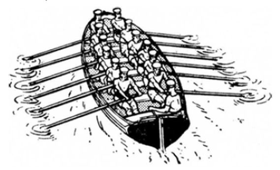
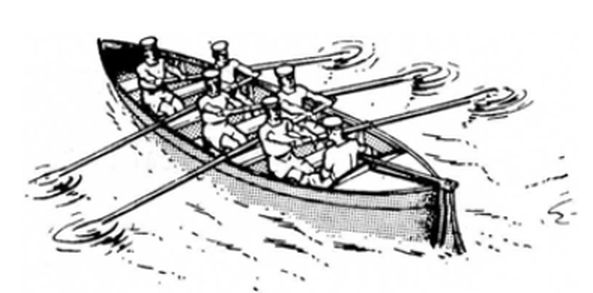
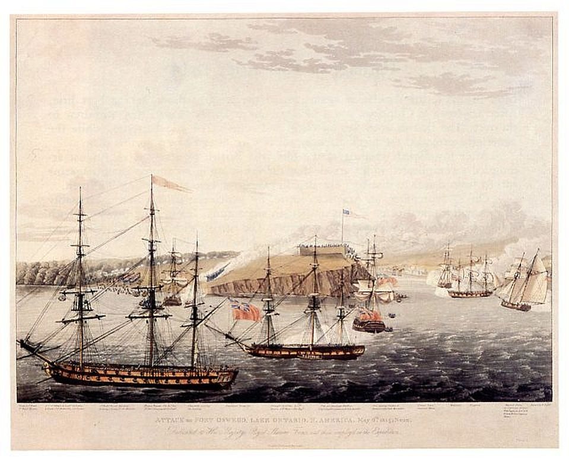

В нашем случае первый корень – это модель триеры, предложенная Моррисоном (и поддержанная многими другими), а второй – модель Тилли (и его сторонников).
Чтобы разобраться в ситуации, стоит вернуться к нашему посту девятилетней давности.
Текст этого поста показывает, что многие сложности проблемы не в последнюю очередь связаны с запутанностью терминологии. И, конечно же, с произвольным толкованием дошедших до нас археологических свидетельств, попыткой подогнать их под гипотезу автора. К сожалению, консенсус в этом вопросе до настоящего времени так и не достигнут.
Ввиду того, что мы давно не встречались на страницах ЖЖ, многие детали нашего обсуждения темы античных гребных кораблей могли стереться из памяти. Поэтому напомним некоторые факты, установленные нами в предыдущих постах.
Тилли (Alec Tilley) считает, что реконструкция триеры Olympia слишком сложна и ненаучна. Он полагает, что трактовка Ленорманского барельефа основными идеологами проекта Olympia Моррисоном и Коутсом как изображение триеры неправомерна и на барельефе показан корабль с одним рядом весел, а использование изображенных на барельефе горизонтальных и наклонных линий как свидетельств о трехъярусном корабле является принятием желаемого за действительное.

Другие же иконографические свидетельства существования кораблей с тремя рядами весел нам не известны.
И Тилли и его оппоненты исходят из того, что триера как тип корабля определяется числом гребцов (три человека) в некотором поперечном сечении, которое Моррисон в свое время назвал «room». С той лишь разницей, что для Тилли это сечение определяется пространством, которое занимает банка гребцов, простирающаяся от одного борта корабля к другому, в то время как его оппоненты определяют «room» как некое пространство, относящееся к одному только борту, т.е. в случае триеры у них в поперечном сечении находятся не три, а шесть гребцов.
Тилли к своему заключению пришел, изучая изображение на так называемой «вазе с сиренами» - краснофигурном сосуде округлой формы, стамносе, который датируют 490 г. до н.э., (находится в Британском музее). Тилли отмечает, что на стамносе изображен левый борт корабля Одиссея с семью весельными портами, шестью веслами и четырьмя гребцами.

Композиция изображает Одиссея, которого товарищи привязали к мачте, чтобы он не поддался грозящему гибелью пению сирен. На изображении корабля только четыре гребца сидят на левом борту, в то время как через порты этого борта проходит шесть весел, плюс еще один порт в носу остается пустым. (Это греческое изображение отличается от его осовремененного варианта на картине Джона Уильяма Уотерхауса.)

В 2004 г. Британский Музей поместил схему Тилли, объясняющую кажущийся парадокс в размещения гребцов и весел на корабле Одиссея.

На этом завершим наш краткий обзор. (К схеме Тилли мы еще вернемся в дальнейшем)
Ясно, что наши спокойные рассуждения о системах гребли на античных кораблях могут вновь зайти в тупик, если мы не разберемся наконец-то (а это не первая наша попытка!) в терминологии, которую используют специалисты по этому вопросу в своих работах. Опираться только на обычную лексику из популярных статей по античным гребным кораблям – затея бесполезная, так как она сразу же заводит в лабиринт противоречий, из которого нет выхода и остается одно – сдаться на милость Минотавра (читай: Моррисона).
Ключевым в нашей нынешней попытке является стремление понять, что обозначает английское выражение bank of oars.
Английский язык, как и русский, слово bank заимствовал из немецкого, в котором Bank означает (в интересующем нас смысле) скамья, скамейка, лавка, а также банка (скамья для гребцов), как, например, у Гете, отрывок из которого помещен в зпиграфе.
Подчеркнутые в отрывке слова в подлиннике выглядят так:
Nur die Galeerensklaven kennen sich,
Die eng an Eine Bank geschmiedet keuchen;
Но в отличие от русского, в английском слово bank приобрело новое значение – ряд, или ярус весел, в случаях, когда слово применяется к гребным кораблям. Каким образом это произошло, мне до конца понять не удалось. В Оксфордском словаре это значение помечено как catachr. – катахреза, неправильное употребление (misuse) слова. Первое употребление его в английской литературе относится к началу XVII века. Оно отмечено в фундаментальном труде сэра Уолтера Рэли (Raleigh, Walter ) «История мира», написанном в тюремной камере Тауэра и впервые опубликованном в 1614 году.
Камера сэра Рэли в Тауэре
Описывая один из эпизодов Первой Пунической войны, Рэли пишет
…a storme of wind thrust one of the Carthaginian Gallies, of five banks, to the shore.
Штормовой порыв ветра прибил одну из карфагенских галер, имеющую пять рядов весел, к берегу.
Book V, Chap. I. Sect.5, p.565 (цитируется по изданию 1736 года)
Было ли это выражение умышленно введено в оборот знаменитым английским моряком, или это случайная описка (совсем просто перепутать bank с rank, которое как раз и означает ряд весел) – мы не знаем, но новый термин постепенно стал завоевывать место в работах английских авторов. Причем, что интересно, в первую очередь в трудах писателей, не имеющих прямого отношения к морскому делу, как правило людей духовного звания. Сначала у Питера Хейлина в «Космографии» (первое издание (Microcosmus ) вышло в 1622 г.)
But so it hapned … that a Tempest separating a Quinqueremis or Gallie of five banks of Oars, from the rest of the Carthaginian Fleet, cast it on the shore of Italy
Но так случилось, … что ураган отделил квинкерему, или галеру с пятью рядами весел, от остального карфагенского флота и выбросил ее на побережье Италии.
Heylyn, Peter (1600-1662). Cosmographie in four bookes : containing the chorographie and historie of the whole vvorld, and all the principall kingdomes, provinces, seas and isles thereof, Lib. IV. Part. II
(Не удивляйтесь небольшой разнице в годах между датой рождения автора и датой публикации рассматриваемого нами труда: такие вот были тогда вундеркинды)
Профессиональные моряки, впрочем, долго не принимали термин Bank of oars в значении «ряд весел». Автор известного морского словаря Уильям Фалконер пишет, например, в 1780 году
Bank of oars, a seat or bench of rowers in a galley.
Bank of oars – сидение, или скамья гребцов на галере
William Falconer. An Universal Dictionary of the Marine
Ему следует французский политик и администратор военно-морского флота Даниэль Лескалье (1743-1822), который в своем англо-французском «Словаре морских терминов» (Lescallier D. Vocabulaire des termes de marine. Londres, 1783), дает такой перевод
Bank of oars.– Banc de rameurs.
Т.е. банка (не ряд!) гребцов
В русском языке термин «банка» также не имеет таких значений, которые хотя бы сколько-нибудь были связаны с понятиями «ряд весел», ярус или этаж на многоярусных гребных судах. Более того, эти понятия исключались из переводов английского выражения bank of oars. Адмирал А.С.Шишков в Треязычном Морском Словаре (1795) пишет:
ВАNK оf оаrs.— гребецкая банка, или банка на гребномъ суднѣ,
т.е. буквально следует за переводом Лескалье.
Это же повторяет Бутаков в Словаре морскихъ словъ и реченiй (1837)
Bank of oars. (Banc de rameurs.) Банка на гребномъ суднѣ.
Таким образом, значение Bank of oars как «ряд весел» (на исторических судах, имевших несколько рядов весел один над другим ), по умыслу (катахреза!) или по недоразумению введенное сэром Рэли, остается только в английском языке.
Этот пример показывает, что вступая на территорию английской морской лексики, связанной с гребными судами, ухо надо держать востро. Об этом мы вспоминаем, когда пытаемся отыскать глагол, соответствующий интересующему нас значению существительного bank. Так уж заведено у англичан, что на каждое (или почти на каждое) существительное имеется схожий по форме глагол. Глагол bank, конечно, есть, но все его значения никак не связаны с тем, чем мы сейчас занимаемся. Зато вот составные глаголы, в которые входит bank, присутствуют. Такие, как single-bank, double-bank, triple-bank и т.п. Эти глаголы имеют два значения. Первое – как в выражении double-bank an oar – грести двумя гребцами на каждом весле, второе – садить на каждую банку двух гребцов, каждый из которых гребет одним веслом на своем борту.

В качестве примера приведем отрывок из приключенского романа английского мореплавателя и писателя Фредерика Марриета (Frederick Joseph Marryat; 1792-1848) «Newton Forster, or the Merchant Service» (1832; в русском переводе неизвестного переводчика, вышедшем в издательстве П.П. Сойкина, СПб, в 1911 г. – Ньютон Форстер. Служба на купеческом корабле):
Another and another musket was fired. They heard the guard turned out; lights passing on the batteries close to them, and row-boats manning. They double-banked their oars, and with the assistance of the ebb tide and obscurity they were soon out of gun-shot. They then laid in their oars, shipped their mast, and sailed away from the coast.
Еще и еще выстрел. Началась тревога, замелькали огни; французы размещались по гребным шлюпкам. Беглецы с удвоенной силой налегли на весла и с помощью отлива и темноты скоро очутились вне досягаемости ружейных выстрелов. Тогда они сложили весла, поставили мачту и на парусах пошли в море.
Мы, вооруженные только что полученным знанием, сразу же, конечно, заметим ошибку переводчика. Марриет имел в виду, что беглецы посадили по два гребца на каждое весло, переводчик же – что гребцы просто удвоили прилагаемые при гребле усилия.
Отметим еще одну особенность глагола double-bank и родственных ему: сначала появилось причастие прошедшего времени double-banked, а уж затем сам глагол. Пожалуй, первым использовал причастие английский мореплаватель (и, конечно же, капер) Уильям Дампир (William Dampier, 1651-1715) в описании своих плаваний «Новое путешествие вокруг света» (1697). Кстати, Дампир стал первым мореплавателем, совершившим три кругосветных путешествия.
They have also some pretty large Boats, which will carry 40 or 50 Men. These they Row with 12 or 14 Oars of a side. They are built much like the small ones, and they row doubled banked; that is, two Men setting on one bench, but one Rowing on one side, the other on the other side of the Boat.
У них было также несколько прекрасных больших судов, которые способны были поднять 40-50 человек. Эти суда имели по 12–14 весел на каждом борту и были построены на тот же манер, что и малые шлюпки, т.е. были doubled banked; это означает, что на каждой банке сидело по два человека, один из которых греб с одного борта, а второй – с другого.
DAMPIER, WILLIAM. A NEW VOYAGE ROUND THE WORLD. v.1,
Я не буду повторяться, но примите на веру, что подобная же история имела место с глаголом single-bank и причастием single-banked.

Т.е. single-banked – имеющий один ряд гребцов на каждый борт, причем на каждой банке сидит один человек, а весла чередуются. Как например, на приведенном рисунке вельбота.
И еще одно замечание относительно термина double-banked.
В самом начале девятнадцатого века во флотах ряда стран появились новые фрегаты, которые у англичан получили название double-banked frigates. Первым над проектом такого фрегата начал работать датский кораблестроитель Hohlenberg в 1801 году. Инициативу перехватили англичане и французы, которые начали экспериментировать с размещением второй батареи на спардеке фрегатов.

Атака на форт Oswego 6 мая 1814 года
Рисунок L. Hewitt, гравировал R. Havell
Было построено несколько таких фрегатов, в том числе и в русском флоте. Но это особая тема, и займемся мы ею основательно в другой раз.